HAVEN Reservation Lifecycle Walkthrough
Trace Hale Mālie’s booking, service work, and financial records, then save a reservation summary.
For Reservation staff and bookkeepers.
- Open the running HAVEN app and have access to Reservations, Daily Operations, Statements, and Reports.
- Use the existing fictional Hale Mālie stay for 23 to 27 October 2026.
- Keep the reservation work tab available as you follow related records. The Navigation Guide explains Search and work tabs.
- The saved example summary may already be attached to the stay. Use that file to follow the download steps; prepare a new edition when you want a fresh captured result.
Begin with the stay you want to understand
Use the reservation as a thread through the work, then save a financial summary for that same stay.
Do: Open global Search, enter Hale, and select the reservation result for Hale Mālie dated 2026-10-23 to 2026-10-27.
You should see: Reservation Financials opens with the stay in focus. The property and dates identify the example used throughout this walkthrough.
Do: Find Reservation lifecycle below the financial summary. Read the six stage headings before opening their related work.
You should see: Booking, guest payments, operations, accounting, owner statements, and reports provide routes into the records associated with this stay.
What you will take away
You will connect the accepted terms to the folio, distinguish guest activity from accounting entries, locate property and owner records, and save a PDF that covers this reservation. The same property name can appear in several places; the stay dates and selected reservation keep those views connected.
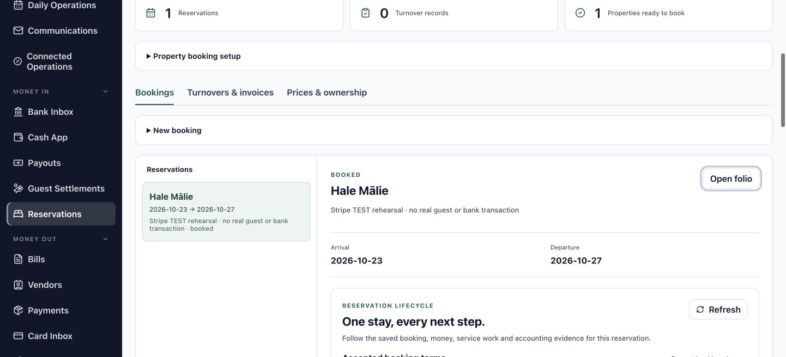
Read the agreement behind the stay
Start with the booked nights and accepted pricing before interpreting the financial records.
Do: In Booking & pricing, select Review booking. Confirm Hale Mālie and the arrival and departure dates in Bookings & turnovers.
You should see: The booking area displays the same four-night stay, arriving 23 October and departing 27 October.
Do: Expand Original accepted quote and read the quoted nights and charge total.
You should see: The accepted pricing describes the terms attached to the booking. The example totals $1,030.
Keep agreement and current terms connected
The accepted quote explains what was agreed when the stay was booked. Current reservation terms provide the position you are reviewing now. When a stay has a reviewed change, its original quote remains part of the history alongside the revised terms. Confirming both helps you explain a charge without relying on a property name or a remembered price.
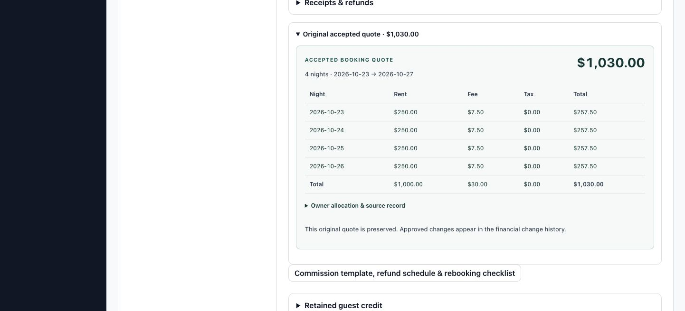
Connect the quote to the folio
Read the individual charges that make up the reservation total.
Do: From the selected booking, choose Open folio, then choose All Reservations and select Hale Mālie if needed. Find Folio Summary in the reservation's financial review.
You should see: The folio shows eight lines for this stay, with their charge descriptions, amounts, and recognition states.
Do: Compare the four Nightly rent lines and the four Guest processing fee lines with the accepted total.
You should see: Four charges of $250 total $1,000 in rent. Four charges of $7.50 total $30 in processing fees. Together they make $1,030.
Do: Select Review booking in the lifecycle to return to the booking area before following the next related workspace.
You should see: The same reservation remains selected in Bookings & turnovers.
Read each label for the question it answers
A charge describes an amount associated with the stay. Recognized identifies its accounting treatment; it is separate from the record of a guest receipt. The $30 processing fee is part of this fictional example's accepted pricing. Use the saved charge and disclosure for the actual reservation rather than treating that amount as a general fee policy.
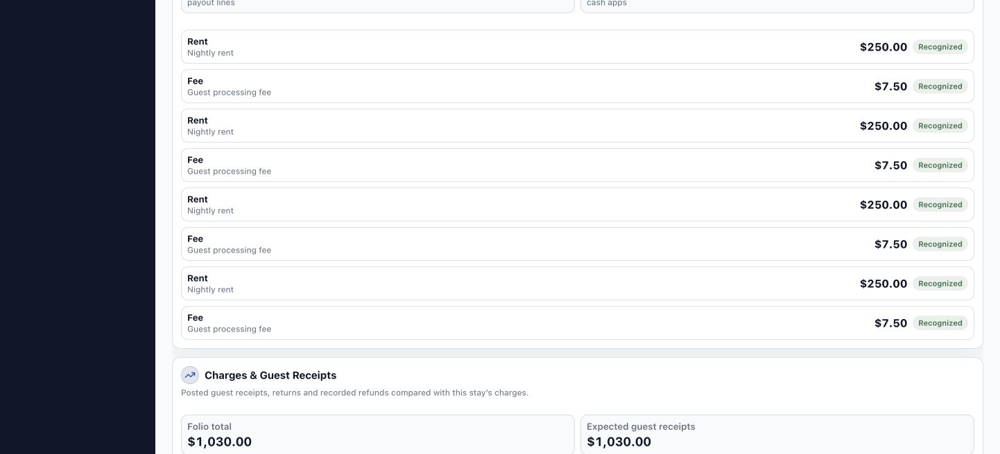
Read the guest payment position
Use the charges, receipts, and balance together to understand the guest side of the stay.
Do: In Reservation lifecycle, compare Folio charges, Net recorded guest receipts, and Guest balance.
You should see: The example shows $1,030 in charges, $0 in recorded receipts, and a $1,030 guest balance.
Do: Select Review guest receipts to open Cash App. Inspect the available cash batches, deposits, and related applications, then return to the reservation work tab.
You should see: Cash App provides the records used to connect incoming bank activity to guest items. Returning to the stay restores the context for its payment totals.
Keep collection and bank evidence distinct
Card-attempt holds and confirmed card collections have their own fields. Bank-posted receipts establish a different event. Read the label beside each amount before comparing it with a guest balance or owner funds. If a payment setup message appears, you can continue reviewing the reservation and its existing records.
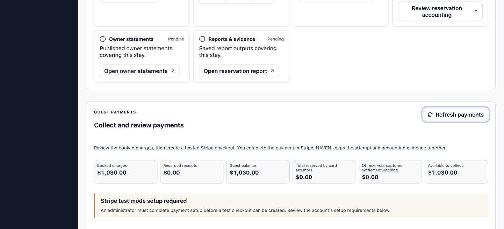
Find the stay on the operations board
Use the schedule date to locate the reservation and read its current operational record.
Do: Return to the lifecycle and select Open daily operations. Set Operations date to 2026-10-23 and choose Arrivals.
You should see: The board displays reservations associated with that arrival schedule.
Do: Select Hale Mālie. Compare the Arrival, Departure, and Status fields with the reservation you have been following.
You should see: Stay details identifies the same property and dates and shows its current operations status.
Use the date as a schedule filter
The board describes the current status for the selected schedule. Selecting 23 October helps locate this arrival; it does not reconstruct the screen as it looked on that date. Arrival readiness, guest check-in, and departure are separate saved events. Read the event and its context to understand where the stay sits in the operational workflow.
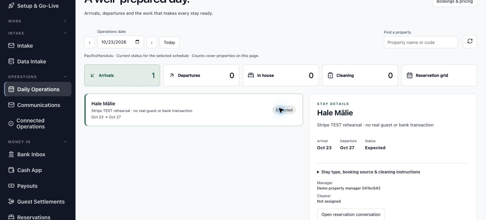
Locate the checkout work and its invoice
Follow the service record to understand the connection between property work and a vendor cost.
Do: Return to the reservation, open Bookings & turnovers, and choose Turnovers & invoices.
You should see: The turnover area groups checkout work with its workflow, inspection, and invoice information.
When a turnover record is listed for the stay:
Do: For a listed service record, compare the property, checkout date, work state, inspection information, and linked bill.
You should see: The selected service record shows how the physical work relates to its vendor invoice and accounting record.
Read the connection in either direction
A turnover record brings the assignment, inspection, and invoice links together. An inspected service record describes the work performed; the invoice and bill carry its cost into accounting. Follow those links when reviewing recorded service work, then return to the reservation's lifecycle.
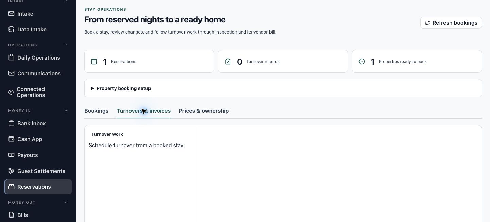
Read the accounting evidence for the stay
Connect the folio's recognition state to the saved accounting source.
Do: In Reservation lifecycle, expand Saved evidence (1) under Accounting & owner funds.
You should see: The example displays a recognition record with the status Posted.
Do: Compare the Posted recognition source with the Recognized folio lines you reviewed earlier. Use the source label to identify the accounting event attached to this stay.
You should see: The folio and recognition source describe the same reservation's charges and their accounting treatment.
Interpret the accounting result
Recognition records the accounting effect of a charge. A receipt records guest money, and an owner allocation connects eligible collected rent to the owner's funds. The linked records let you trace each measure to its source. Each stage describes its own part of the stay.

Find the owner statement records
Distinguish the owner's contract from the statements prepared under it.
Do: From the lifecycle, select Open owner statements. In Owner Contract Registry, review the selected owner contract, its Covered units, and Effective dates.
You should see: The contract identifies HM-01 · Hale Mālie and the period covered by its approved version.
Do: Choose Statement Runs, then inspect Published or Statement Items as appropriate. Check the owner and period on any record before opening it.
You should see: Statement Runs groups period records; Statement Items contains their lines, and Published provides the issued statement records.
Keep owner reporting in context
An approved contract establishes the terms used for owner accounting. A statement brings together financial sources for a particular period and owner. A published statement is an issued document; it is not a live display of every later change. Return to the reservation when you are ready to prepare its financial summary.
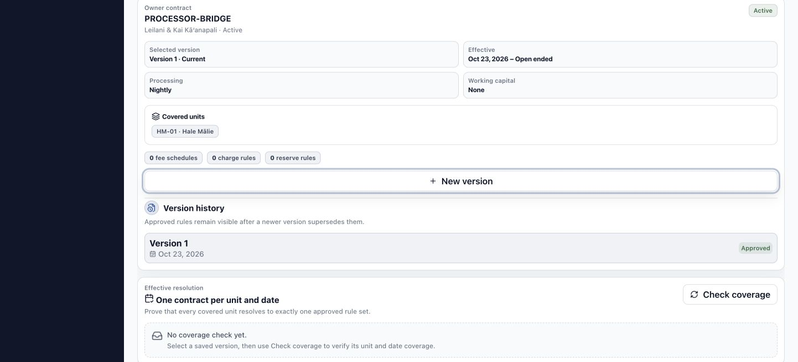
Prepare a report for this reservation
Carry the stay identity into Reports instead of starting with a portfolio-wide report.
Do: In Reports & evidence, select Open reservation report to prepare a summary, or Review generated report to open the saved example.
You should see: Reports opens for the selected reservation, with its report definition or saved report job in focus.
Do: Read Report scope: Selected reservation. Confirm Start is 2026-10-23 and End is 2026-10-27.
You should see: The scope notice identifies the selected reservation, and the period covers the four-night stay.
Make the selection before generating
A report's title describes the kind of information it presents. Its scope and period identify which records that information covers. Starting from the reservation carries the stay into the report preparation. Keep that scope in view when choosing the report and checking its preview.
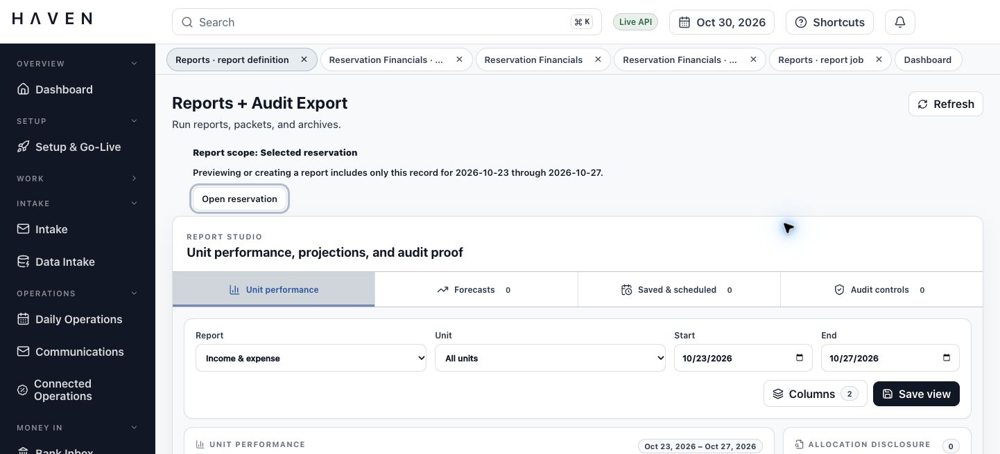
Choose the reservation summary
Use Report Launcher to select the question the report will answer.
Do: Find Report Launcher and choose Reservation Financial Summary in its Report field.
You should see: The selected definition is Reservation Financial Summary.
Do: Choose Preview Report.
You should see: Preview + Drilldown displays the figures for the selected reservation.
Keep the report definition and scope together
The definition determines the information presented. The selected reservation and period determine the records it covers. Read both before saving an edition. The report catalog also provides this definition when you are preparing a new report.
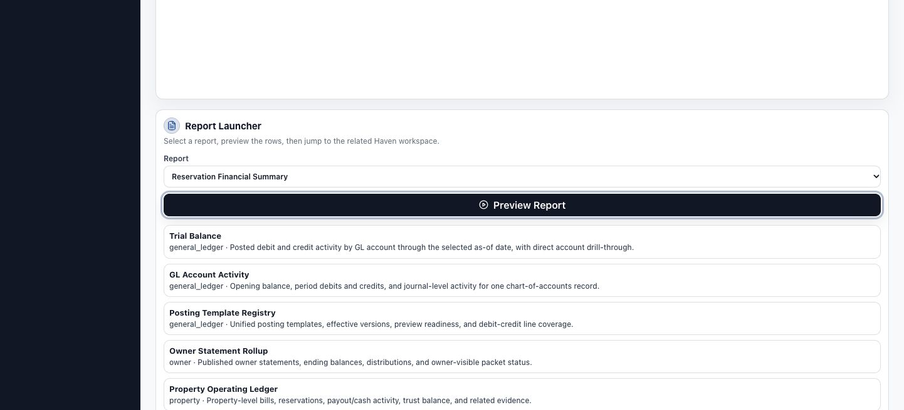
Check the report preview
Compare the report's selected stay and figures before creating its reading copy.
Do: Read Preview + Drilldown and compare its reservation scope and dates with the stay you selected.
You should see: The preview contains one reservation for the chosen period.
Do: Compare Folio charges, Net guest receipts, and Guest balance with the reservation financial review.
You should see: The figures agree: $1,030 in charges, $0 in recorded receipts, and a $1,030 guest balance.
Use the preview as a comparison
This is a check of the report you are preparing. Look for the same reservation and measures you have already read in the folio and payment summary. If the row or period describes another selection, return to the reservation's report link and prepare the intended scope before generating a file.
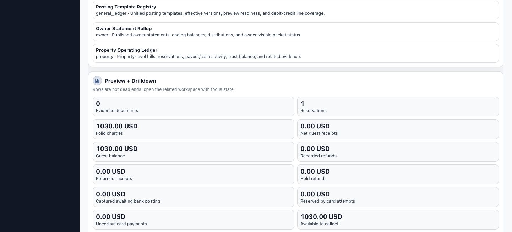
Save the financial summary as a PDF
Create one report output and keep its saved job as the route back to that edition.
To prepare a new edition:
Do: Choose PDF under Export format. Open Report Catalog and select the Reservation Financial Summary row. Check that Report Launcher shows Reservation Financial Summary and that the scope still says Selected reservation.
You should see: The selected definition and reservation scope identify the summary you are about to save.
When preparing a new edition:
Do: Select Generate Report once. Follow the same report job while its output is prepared.
You should see: Saved report outputs shows a captured result and a Download PDF control.
If the example PDF is already listed, use the saved file directly.
Do: Select Download PDF and open the downloaded summary. Compare its reservation, period, and figures with the preview.
You should see: The example file covers 23 to 27 October 2026 and contains one reservation row with the values you reviewed.
Keep the saved edition meaningful
The job records the report selection and captured result. Its output remains a record of that edition. If later reservation activity changes the figures you need to report, create a new report for the later position rather than treating the earlier file as a live view.
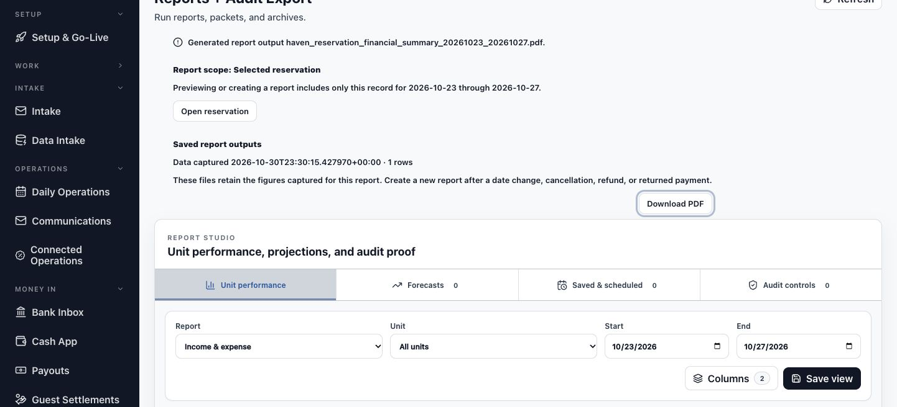
Return to the stay with its report attached
See how the saved output becomes part of the reservation's evidence.
Do: Use Open reservation in the report scope notice, or return to the reservation work tab. Refresh Reservation lifecycle.
You should see: Reports & evidence shows the current saved report and offers Review generated report.
Do: Select Review generated report when you want to reopen its job and saved output.
You should see: HAVEN returns to that exact report job, connecting the downloaded summary with the reservation it describes.
Read the result across the lifecycle
The report adds a saved summary to the stay's evidence. Other stages continue to describe their own records. You can now move from accepted terms to charges, guest activity, property work, accounting, owner reporting, and the report without losing which stay you are reviewing.
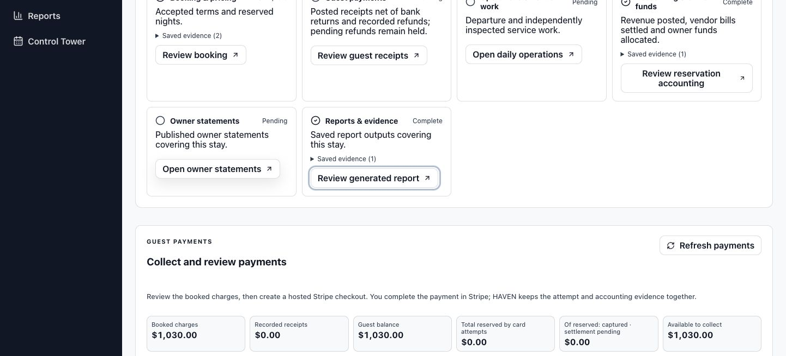
Find your way back when a view differs
Use the selection and saved record to recover your place.
| What you see | What to do | Recognize the result |
|---|---|---|
| The arrival board does not show Hale Mālie. | Set Operations date to 2026-10-23, choose Arrivals, and check the property search. | The selected schedule includes the stay's arrival. |
| Owner Contract Registry opens instead of a statement list. | Choose Statement Runs, Statement Items, or Published under Statements. | The workspace shows the relevant statement records. |
| The report preview describes another selection. | Return to the reservation and use its report link. Confirm the Selected reservation scope and dates. | The preview identifies the intended stay and matching figures. |
| You want a new report edition while a saved job is selected. | Choose Report Catalog, select Reservation Financial Summary, and confirm the selected definition and reservation scope before Generate Report. | The new output has the intended report title, period, and reservation. |
| A report is queued or its output needs another check. | Keep the saved job selected. Refresh its status and use the existing output when it appears. | Saved report outputs provides the PDF for that job. |
You have completed the walkthrough when you can explain how the accepted terms relate to the folio, locate the supporting operational and accounting records, and reopen the same reservation's saved PDF summary.